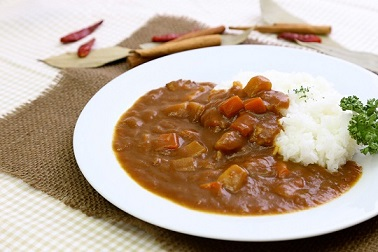

まろやかカレーライス
今日紹介するレシピは、ひと手間加えたまろやかカレーライスです。
カレーを煮込む際に
あるもの
を加えることでまろやかな風味にします。

材料一覧
4人前
ルー（市販）
1/2箱
じゃがいも
4前
玉ねぎ
2個
ニンジン
2本
鶏肉
250グラム
サラダ油
大1
水
850ml
チョコレート
お好み
作り方
鶏肉、玉ねぎ、じゃがいも、にんじんを一口大に切る。
サラダ油を敷いたフライパンに切った材料を炒める
水を加えて沸騰したらあくを取り、弱火~中火で約15分間煮込む
いったん火を止め、ルーを割り入れて溶かし、再び弱火でとろみがつくまで約10分煮込む
ワンポイント
コクを出すために煮込んでいる途中でお好みの量のチョコレートを加え、混ぜながら溶かしましょう。
チョコレートではなくココアや牛乳、ミルキーを入れても美味しく出来上がります。
トップページに戻る
ページトップへ戻る
 4人前 4人前
4人前 4人前